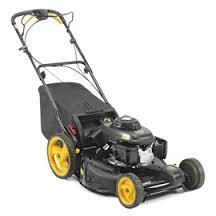
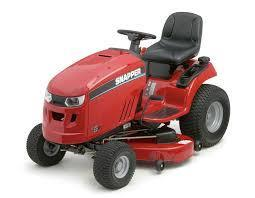
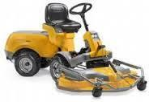
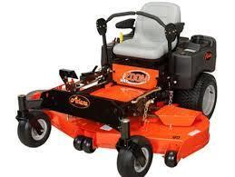

Video overskrift
Forårs klargøring rotorplæneklipper
✔ milk
✔ butter
✔ bread

Motorolie skift inkl. olie.
Kontrol af: Knivholder, karburator, tænding, tændrør, luftfilter, samt sikkerhedsfunktioner. Kontrol og justering af: Kilerem, motorens omdrejningstal, samt kabler. Slibning af: Rotorkniv / kniv Plæneklipperen opstartes og afprøves: Maskinen skal være funktionsdygtig ved indleveringKR. 595,- INKL. MOMS
Såfremt vi vurderer udskiftning af reservedele er nødvendige, vil denne/disse, samt arbejdstiden for udskiftning afregnes særskilt
EFTERSYN HAVETRAKTOR
Forårs klargøring af Havetraktor ikke professionel model Motorolie skift inkl. olie. Kontrol af: Knivholder, karburator, tænding, tændrør, luftfilter, benzinfilter, gearkasse/transmission, el-anlæg, dæk/dæktryk, batteri/batteripoler samt sikkerhedsfunktioner. Kontrol og justering af: Kileremme, klipperhøjde, motorens omdrejningstal, samt kabler. Slibning af: Rotorkniv / knive. Smøring af: Kabler, smørenipler.
KR. 1.095,- INKL. MOMS
EFTERSYN RIDER
Forårs klargøring af Rider / græsklipper ikke professionel model Motorolie skift inkl. olie. Kontrol af: Knivholdere, karburator, tænding, tændrør, luftfilter, benzinfilter, gearkasse/transmission, el-anlæg, dæk/dæktryk, batteri/batteripoler samt sikkerhedsfunktioner. Kontrol og justering af: Kileremme, klippehøjde, motorens omdrejningstal, samt kabler. Slibning af: Rotorkniv / knive. Smøring af: Kabler, smørenipler.
KR. 1.095,- INKL. MOMS
EFTERSYN ZERO TURN
Forårs klargøring af Zero turn / græsklipper ikke professionel model Motorolie skift inkl. olie. Kontrol af: Knivholdere, karburator, tænding, tændrør, luftfilter, benzinfilter, gearkasse/transmissioner, el-anlæg, dæk/dæktryk, batteri/batteripoler samt sikkerhedsfunktioner. Kontrol og justering af: Kileremme, klippehøjde, motorens omdrejningstal, samt kabler. Slibning af: Rotorkniv / knive. Smøring af: Kabler, smørenipler.